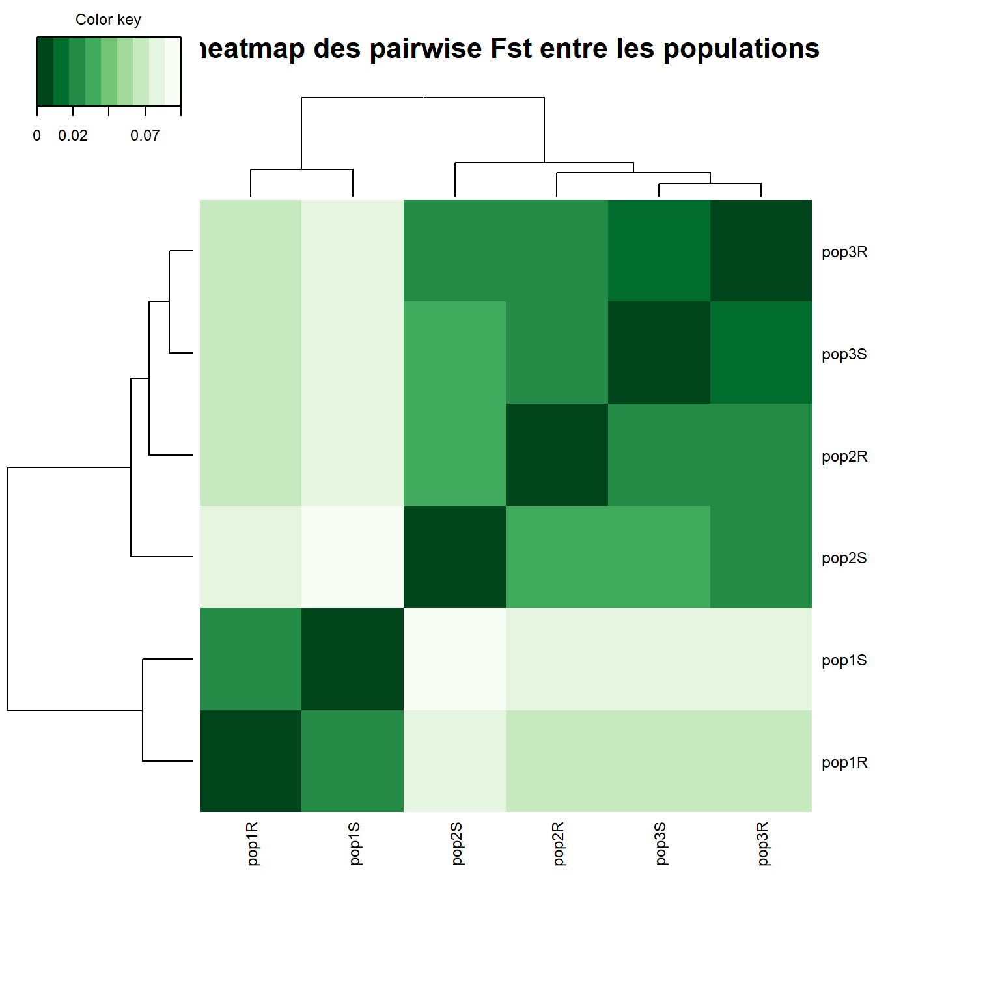
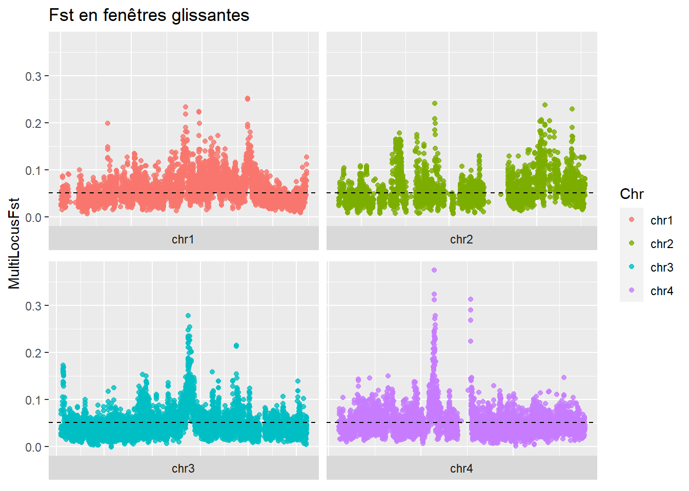

Annexes
Annexe 1
A partir de cet objet pooldata on faire une première analyse des Fst. Des outils sont décrits et exemplifiés dans la vignette de PoolFstat : (https://cran.r-project.org/web/packages/poolfstat/vignettes/vignette.pdf), parmis ceux-ci on trouve l’analyse des Fst.
Pairwise
Calcul des Fst entre les populations deux à deux (pairwise) afin de visualiser la proximité génétique entre populations.
#Calcul des pairwise Fst
PairWise.fst <- compute.pairwiseFST(GWAS.pooldata, method = "Anova", min.cov.per.pool = 4, max.cov.per.pool = 1e+06, min.maf = 0.05, output.snp.values = FALSE)## Computation of the 78 pairwise Fst
##
## Overall Analysis Time: 0 h 0 m 0 s## pop01 pop02 pop03 pop04 pop05 pop06
## pop01 0.00000000 0.02599730 0.04047179 0.03663751 0.04296871 0.03467895
## pop02 0.02599730 0.00000000 0.02163574 0.01668035 0.03006506 0.05535359
## pop03 0.04047179 0.02163574 0.00000000 0.00972097 0.04251282 0.06408399
## pop04 0.03663751 0.01668035 0.00972097 0.00000000 0.03987384 0.05859326
## pop05 0.04296871 0.03006506 0.04251282 0.03987384 0.00000000 0.06971754
## pop06 0.03467895 0.05535359 0.06408399 0.05859326 0.06971754 0.00000000
## pop07 0.03053708 0.01020988 0.01539477 0.01103366 0.03480062 0.05686072
## pop08 0.04351450 0.04143124 0.03574270 0.03355561 0.06865341 0.05031445
## pop09 0.01568180 0.03339984 0.04601002 0.04203211 0.04237655 0.03585086
## pop10 0.04294600 0.03300989 0.04295159 0.04308963 0.01779158 0.06501738
## pop11 0.04198359 0.03953978 0.05263064 0.04737610 0.04070589 0.05618353
## pop12 0.04274732 0.04230794 0.05201989 0.04877386 0.03934474 0.05856191
## pop13 0.02928271 0.03766647 0.05230044 0.04811739 0.05368314 0.02395252
## pop07 pop08 pop09 pop10 pop11 pop12
## pop01 0.03053708 0.04351450 0.01568180 0.04294600 0.041983592 0.042747321
## pop02 0.01020988 0.04143124 0.03339984 0.03300989 0.039539781 0.042307937
## pop03 0.01539477 0.03574270 0.04601002 0.04295159 0.052630643 0.052019892
## pop04 0.01103366 0.03355561 0.04203211 0.04308963 0.047376104 0.048773856
## pop05 0.03480062 0.06865341 0.04237655 0.01779158 0.040705889 0.039344737
## pop06 0.05686072 0.05031445 0.03585086 0.06501738 0.056183526 0.058561908
## pop07 0.00000000 0.03819477 0.03736103 0.03891893 0.044734171 0.046729487
## pop08 0.03819477 0.00000000 0.04864457 0.06510535 0.057654706 0.060230565
## pop09 0.03736103 0.04864457 0.00000000 0.03904249 0.039467063 0.040213648
## pop10 0.03891893 0.06510535 0.03904249 0.00000000 0.025915893 0.023573077
## pop11 0.04473417 0.05765471 0.03946706 0.02591589 0.000000000 0.007042681
## pop12 0.04672949 0.06023056 0.04021365 0.02357308 0.007042681 0.000000000
## pop13 0.04261189 0.05247061 0.02609580 0.05261074 0.051519712 0.050635147
## pop13
## pop01 0.02928271
## pop02 0.03766647
## pop03 0.05230044
## pop04 0.04811739
## pop05 0.05368314
## pop06 0.02395252
## pop07 0.04261189
## pop08 0.05247061
## pop09 0.02609580
## pop10 0.05261074
## pop11 0.05151971
## pop12 0.05063515
## pop13 0.00000000#heatmap
cim_color <- colorRampPalette(rev(brewer.pal(9, "Reds")))(9)
cim(df, color = cim_color, symkey = FALSE, margins = c(10, 10), title = "heatmap des pairwise Fst entre les populations")
On peut aussi calculer et plotter des Fst multi-locus en balayant le génome avec une fenêtre glissante de SNP consécutifs, une région génomique très différenciée apparaitra sous la forme d’une éruption de points colorés. ## Fst en fenêtre glissante {-}
#calcul des Fst avec une fenêtre glissante de 100 SNP
Multi.Loc.fst <- computeFST(GWAS.pooldata, method = "Anova", sliding.window.size = 100)## Start sliding-window scan
## 1 chromosomes scanned (with more than 100 SNPs)
##
## Average (min-max) Window Sizes 28 ( 1.7 - 865.6 ) kb#conversion en objet data frame
df.fst<-as.data.frame(Multi.Loc.fst$sliding.windows.fst, h=T)
#plot en ligne.
Fst.plot = ggplot(data=df.fst, aes(x=CumulatedPosition/1e6, y=MultiLocusFst)) +
geom_point(aes(color=Chr), alpha=0.8, size=1.5) +
ggtitle("Fst en fenêtres glissantes") +
geom_hline(yintercept=Multi.Loc.fst$FST,lty=2) #le seuil indique la Fst globale estimée à l'échelle du génome
Fst.plot + scale_x_continuous() + scale_y_continuous() +
theme(axis.title.x=element_blank(), axis.text.x=element_blank(), axis.ticks.x=element_blank()) +
facet_wrap(~Chr, scales = 'free_x', strip.position =c("bottom")) #affichage des chromosomes en grille
Futschik, Andreas, and Christian Schlötterer. 2010. “The Next Generation of Molecular Markers From Massively Parallel Sequencing of Pooled DNA Samples.” Genetics 186 (1): 207–18. https://doi.org/10.1534/genetics.110.114397.
Gautier, Mathieu. 2015. “Genome-Wide Scan for Adaptive Divergence and Association with Population-Specific Covariates.” Genetics 201 (4): 1555–79. https://doi.org/10.1534/genetics.115.181453.
Gautier, Mathieu, Renaud Vitalis, Laurence Flori, and Arnaud Estoup. 2022. “F-Statistics Estimation and Admixture Graph Construction with Pool-Seq or Allele Count Data Using the R Package Poolfstat.”
Koboldt, Daniel C., Qunyuan Zhang, David E. Larson, Dong Shen, Michael D. McLellan, Ling Lin, Christopher A. Miller, Elaine R. Mardis, Li Ding, and Richard K. Wilson. 2012. “VarScan 2: Somatic Mutation and Copy Number Alteration Discovery in Cancer by Exome Sequencing.” Genome Research 22 (3): 568–76. https://doi.org/10.1101/gr.129684.111.
Li, Heng, Bob Handsaker, Alec Wysoker, Tim Fennell, Jue Ruan, Nils Homer, Gabor Marth, Goncalo Abecasis, Richard Durbin, and 1000 Genome Project Data Processing Subgroup. 2009. “The Sequence Alignment/Map Format and SAMtools.” Bioinformatics 25 (16): 2078–79. https://doi.org/10.1093/bioinformatics/btp352.
Nielsen, Erica S. 2020. “Pool-Seq Analyses: PoolFstat & BayPass.” https://esnielsen.github.io/post/pool-seq-analyses-poolfstat-baypass/.